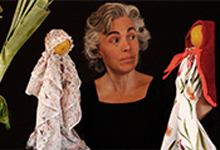

Colecciones
Novedades del catálogo
Consulta las colecciones de la biblioteca, están disponibles en la web. Además de ofrecerte un extenso catálogo, ahora tienes la posibilidad de reservar los libros online. Este otoño hemos ampliado las colecciones con nuevas adquisiciones.
Mujeres y ciencia
Conferencia
Con Sonia Estradé. Martes, 13 de noviembre, a las 19.00 h, en la Biblioteca Jaume Fuster Sonia Estradé, licenciada en Física y doctora en Nanociencias por la UB En esta conferencia veremos qué hacen y dónde están las investigadoras de nuestro entorno, nos preguntaremos por sus trayectorias, y veremos ejemplos de mujeres científicas que deberíamos conocer. Colabora: Universidad de Barcelona (proyecto TOC-TOC)

El lobo cantor de los tres cerditos y Caperucita roja
Teatro infantil
Jueves 15 de noviembre a las 18 h. Area infantil. Mercè, acompañada de la música del violín, nos introduce en el mundo de las frutas y las verduras. Nos explicará las maravillas de estos alimentos que nos ofrece la naturaleza. Con su cesta llena, aprovechará la fruta y verdura para contar un par de cuentos populares tradicionales. Este espectáculo es una audición de violín para niños donde pueden dejar volar la imaginación a través de la música y los cuentos y vivir en armonía. A cargo de: Cia. Pengim-Penjam. Edad recomendada: a partir de 3 años